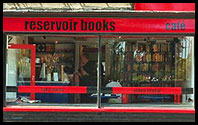
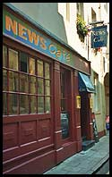
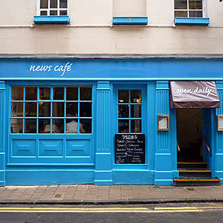
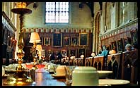
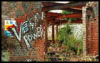

see also: European cafe watch
It turns out that Oxford has a pretty high cafe-factor: the selection of arty, trendy, studenty an chic cafes has a lot in common with the cafes in Cambridge. I wonder if there's a connection.
 Back in 2002 we managed to go to most of the interesting cafes except, unfortunately, Reservoir Books (right), which looked like the kind of small independent cafe-bookshop that every town needs but few have. In addition there are the usual suspects that I didn't bother going to because I'm been to their clones in other towns before: Coffee Republic, Costa Coffee, Cafe Nero, Cafe Rouge and Starbucks (High Street).
These reviews are now almost ten years out of date, but are at least somwhere to start.
  Traditional style operation whose ents posters and varied music prevents it from becoming a tea-room. A maze of contradictions, wall-mounted televisions jar against News Cafe's broad and interesting food menu. My first brief visit for a morning coffee and a glance at the paper was a welcome break from the nearby hordes of shoppers.
July 2010 update: a busy weekday lunchtime saw News Cafe transformed into a slick restaurant-style lunch operation, with good service and food, but none of the shabby coolness that the cafe used to have. We only hope that the place is more relaxed later in the day, and when the upstairs room is open.
Standard horrid ground floor but upstairs there is more space, light and armchairs than is usual. The diffence shows that these chain cafes are at their best when they keep the decor simple - Starbucks usually overdoes it. I must pay it a visit if I run out of real cafes, like the Puccinos through the archway.
 One of Oxford's pavement terraces here is spoilt by horrid plastic patio tables, they'd do well to borrow some of Gourmet Pizza's furniture from across the square. Meanwhile I just left Marion there for her morning coffee while I went around the corner to the tourist info, which turned out to have a much handier pub next door. Since then, the tourist info has reportedly moved from Gloucester Green to Broad Street; I hope the pub is still there.
This mellow South American veggie cafe's excellent cocktail menu saves it from the horror of veggie places that won't offer you a proper drink. The food is nothing special but the atmosphere makes up for it. Come for happy hour (all night Mon-Tue, 5.30 - 9 Wed-Sun) cocktails and snacks, not for lunch like we did. We ended up settling for the admittedly lovely fruit juices, and had to come back another time for a more lively atmosphere and mixed drinks.
 One of the better bookshop cafes, with enough space and light. Enough books too, which was my excuse for an outrageously huge coffee.
This open and friendly place opposite Christchurch is inevitably busy, not least because of their home-made ice-cream. Its Friesian cow theme gives a touch of character. We discovered that the window seats are prime people watching spots, with the bus stop queue across the road, which was full of people far too distinctive to get jobs as extras in films.
Pleasant and chic continental-style bistrot that gets away with being more expensive than the likes of Cafe Rouge simply by being less fake. Popping in for food after ten p.m. we got tasty pizzas and a mellow ambiance.
By far the funkiest cafe in town, Georgina's has the most tempting food we've seen. We only came for breakfast coffee and toast, but could easily spend all day here on bagels, salads, gargantuan ciabatta sandwiches and Lots Of Cake.
Although a small chain, Puccinos is a cafe with a lot of personality. The branches in Kingston, Brighton and Guildford share the relaxed Mediterranean style as well as the crucial sofas and slightly funky decor. From the street - deceptive - Kingston - but prior knowledge - upstairs.
As with The Copper Kettle in Cambridge, what first appears to be a boring tea-room has hidden depths. In this case it's a down-to-earth farmhouse-style room upstairs and a daily selection of imaginatively delicious and good-value salads. An added bonus is the late closing (10 pm Mon-Thu, 10.30 pm Fri-Sat, 9 pm Sun) - we ended up there after excessive shopping made us too late for tea and cake at Georgina's in the Covered Market. Fortunately, presumably thanks to it's relatively secluded location, there weren't too many people so we got one of the pleasant window tables where the cafe's barely audible classical music and the customers' odd conversations blend in with sounds coming through the open sash window from the quiet street below.
Trendy British sandwich bar (wide range of international sandwich fillings on Mediterranean bread) meets Continental-style bistro (small tables, candles, cute staff and Swing) with bold orange and blue decor.
This Pizza Express, like 7a Jesus Lane in Cambridge, also has a pleasant cafe area to chill in with chic decor, sofas and music. This actually looks posher than it is, and although it is not especially dear the rude service and below-expectations fare tend to make this less good value than most places, like a cheap but pretentious clothes shop for the upwardly-mobile working class.
Costa Coffee (Waterstones): in and out fairly quickly here because despite the good big windows, the whole of Waterstones is too claustrophobic, with many small floors. The cafe has a nice small room at the front, though, for whoever gets their first.
Joe's, Cowley Rd: I wanted breakfast but the menu looked too boring and pricey for me to want to sit in an empty cafe. Probably worth going back for coffee in the evening.
Jericho Cafe: looks like a great place, but they'd run out of food so we didn't stay for lunch. Worth a proper visit.
Freud: weird ex-church in Jericho that seemed like it was worth a try, for its huge open space and slightly pretentious atmosphere, but they didn't have any food so we didn't have lunch there either.
{kind=link}
{kind=link}
{kind=link}
{kind=link}